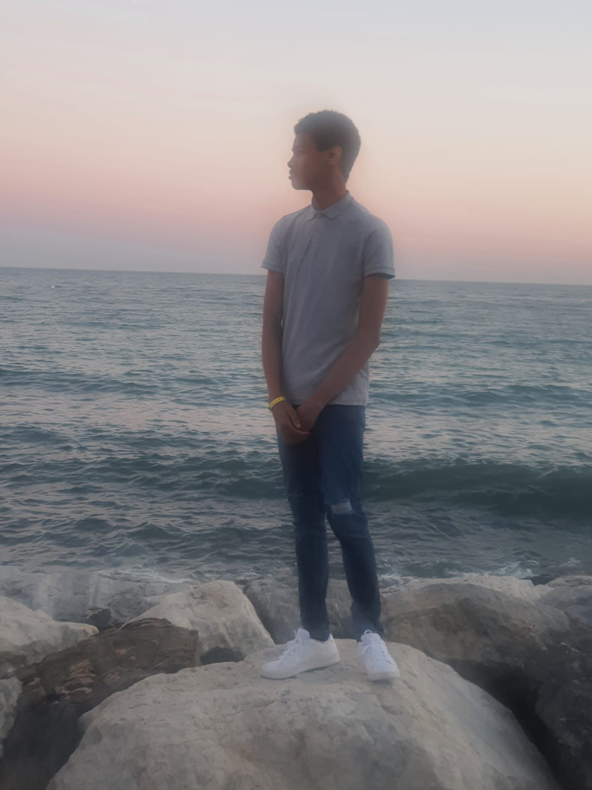
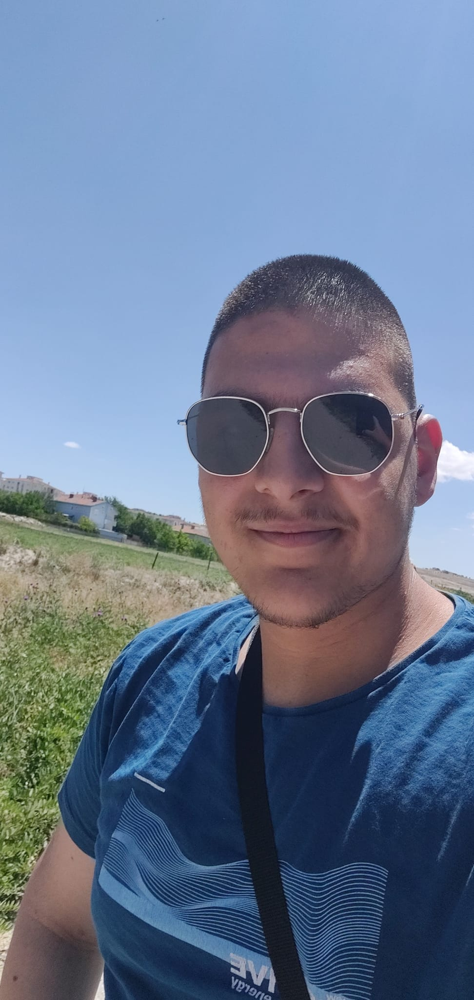

achtergrond informatie voor de studenten
hallo, mijn naam is yermaih waterfort en ik ben 17 jaar oud. ik zit op het techniek college rotterdam bij de Jan Lichthartstraat, maar dat weet je al.
ik kom van het libanon lyceum af, met de profiel: zorg en welzijn. mijn hobbies zijn: gamen en slapen.
ik heb de opleiding software developer gekozen omdat ik altijd al dingen wou programmeren, en sinds ik best veel games speel heeft dat mijn interesse in programmeren alleen maar verhoogt.


Hoi, Embiya hier. Ik ben 18 jaar en zit op het Techniek College Rotterdam voor het tweede jaar.
Mijn eerste jaar was ik op de school in Schiedam en ik deed daar Expert Systems and Devices (Niveau 3 en 4).
Ik heb het schooljaar gehaald op niveau 4 maar ik vond het niet echt leuk dus dacht toch te veranderen van opleiding,
en dat is hoe ik hier terecht ben gekomen op het Jan Lichthartstraat. Thuis game ik graag en programmeer ik graag met een microcontroller.